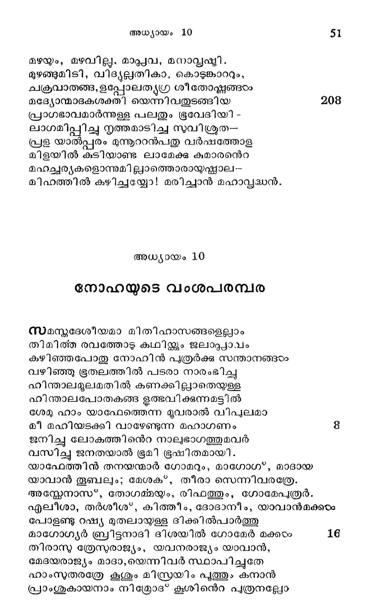

നോഹയുടെ വംശപരമ്പര
സമസ്മദദേശീയമാ മിതിഹാസങ്ങളെല്ലാം
തിമിത്ത രവത്തോടു കഥിയ്ക്കും ജലാറ്റ്യാവം
കഴിഞ്ഞപോതു നോഹിന് പത്രര്ക്കു സന്താനങ്ങരം.
വഴിഞ്ഞു ഭൂതലത്തില് പടരാ നാരംഭിച്ചു
ഫിന്താലമൂലമതില് കണക്കില്ലാതെയുള്ള
ഹിന്താലപോതകങ്ങ ഉത്ഭവിക്കുന്നമട്ടില്
ശേമു ഹാം യാഫേത്തെന്ന മൂവരാൽ വിപുലമാ
മീ മഹിയടക്കി വാഴേണ്ടുന്ന മഹാഗണം 8
ജനിച്ച ലോകത്തിന്െറ നാലുഭാഗത്തുമവര്
വസിച്ചു ജനതയാല് ഭൂമി ഭൂഷിതമായി.
യാഫേത്തിന് തനയന്മാര് ഗോമറും, മാഗോഗ*, മാദായ
യാവാന് തൂബലും; മേശക*, തീരാ സെന്നിവരത്രേ.
അസ്കേനാസ*, തോഗമ്മയും, രിഫത്തും, ഗോമേപത്രര്.
എലീശാ, തര്ശീശ:', കിത്തീം, ദോദാനീം, യാവാന്മക്കഠം
പോളണ്ടു റഷ്യ മുതലായുള്ള ദിക്കില്പാര്ത്തു
മാഗോഗ്യര് ബ്രിട്ടനാദി ദിശയിൽ ഗോമേര് മക്കരം 16
തിരാസു ത്രേസുരാജ്യം, യവനരാജ്യം യാവാന്,
മേദയരാജ്യം മാദാ,യെന്നിവര് സ്ഥാപിച്ചുതേ
ഹാംനുതരത്രേ കൂശൂം മിസ്രരയിം പുത്തും കനാന്
പ്രാംശുകായനാം നിമ്രോദ* കൂശിന്െറ പ്രതുനല്ലോ

ധാ൯ുഷ്ഠന്മാരി ലഗ്രേഗണ്യനാമിവന് ശീനാര്
ദേശത്തു ബാബേ, ലേരക്ക,ക്കാട്, കല്നേയെന്ന
മഹത്താം നഗരങ്ങടം സ്ഥാപിച്ചു ശീനാറില് നി-
ന്ശ്ശറു പുറപ്പെട്ട നിനവേ രെഹോബേോത്തും. 24
കാലഥ്ും നിനവും കാലഹത്തിനും മദ്ധ്യേ
സ്ഥ ലമാം രേസെനെന്ന പുരവും സംസ്ഥാപിച്ച
കൂശി ന്െറ മററുമക്കരം സേബയ്യം ഹവീലയും
സബനയും രമാ, സബൌ"നക്കാ,യിവരത്രെ രമാ
ജനിപ്പിച്ചിതു ശേബാ ഭേദാനെന്നിരുവരെ
ജനിച്ചാര് മിസ്രയിമിന്നടിയില് പേരുള്ളവര്
ലുദിമു മനാമീദും ലെഹാബീം നഫ്*തൂഹിമും
പതര്രസീം, കസ*ലുഹിം, കഫ്തോരിമെന്നേഴുവ്റും. മ
ഇവരിലാറാമതാം കസ്*ലുഹിം, കലത്തില്നി
ന്നവതീര്ണ്ണതയാര്ന്നു ഫെലിസ്ത്യർ പ്രസിദ്ധന്മാര്
കനാനന്െറ പ്ൃതുയര് സീദോൻ, ഹേത്തൊട്, യബുൂസ്യനും
അമോര്യന്, ഗിറ്റൃശ്യനും, ഹിവ്യനു, മക്ക്യന്, സീന്യന്
അലവ്യാദ്യന്, സെമാര്യനും, ഹമാത്യ,നിവര്മൂലം
സരവ്യദിഗ്വ്യാപ്പിയാര്ന്നു വളര്ന്നു കനാന്വംശം.